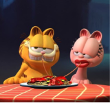

Sobre o filme
Em Garfield: Fora de Casa, o amado gato de estimação laranja (dublado por Chris Pratt) está de volta para mais uma aventura inesquecível: após reencontrar seu pai, o gato de rua Vic (dublado por Samuel L. Jackson), que não via há muito tempo, Garfield e o cãozinho Odie acabam se envolvendo em um arriscado assalto.
Arlene
Uma gata rosa e namorada de Garfield. Aparece esporadicamente, já que Garfield é visto muito paquerando outras gatas; Lyman - Amigo de Jon, o dono original de Odie.